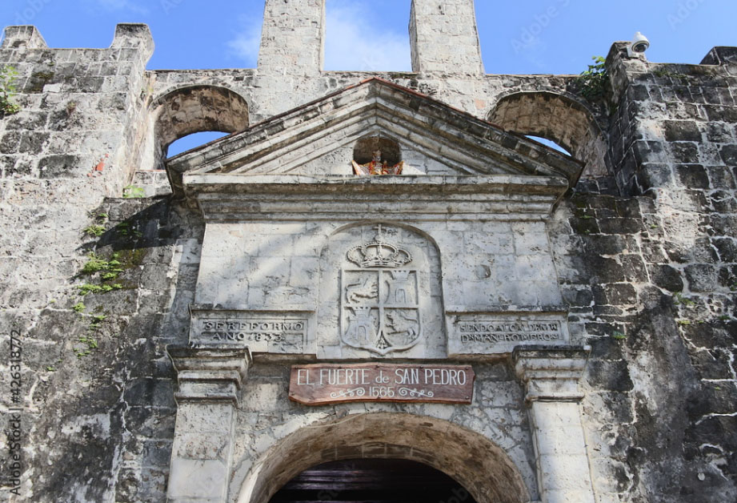
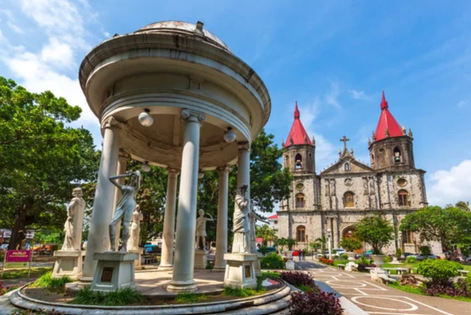
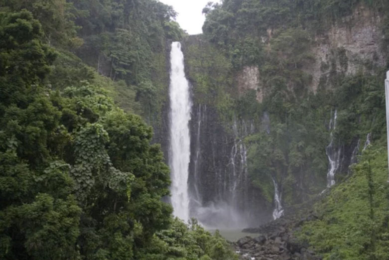
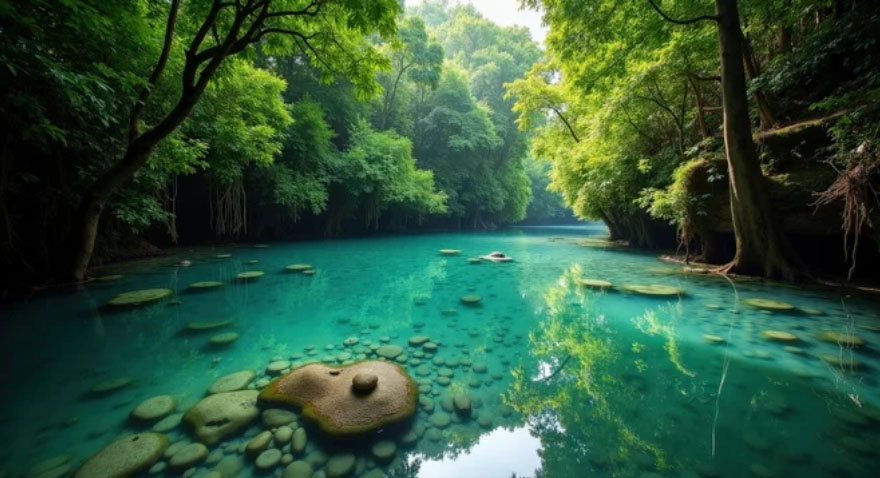
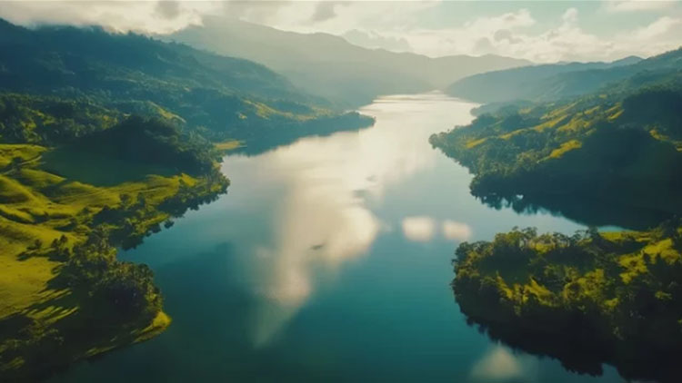
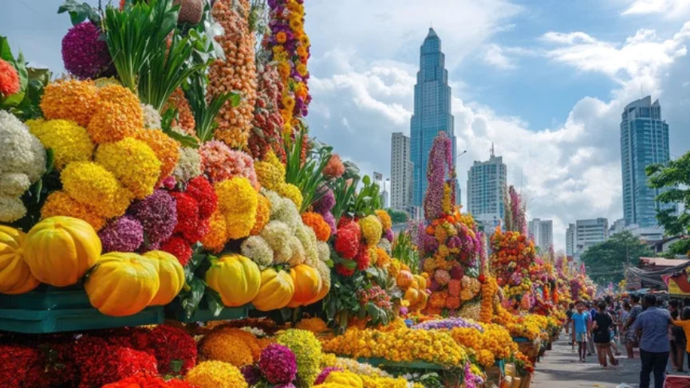
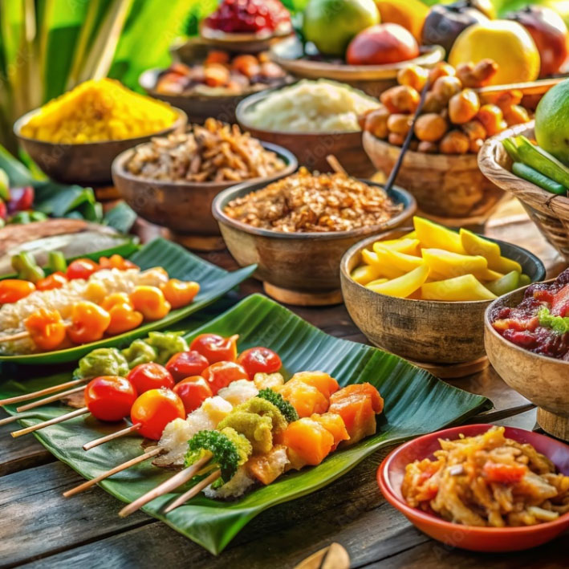
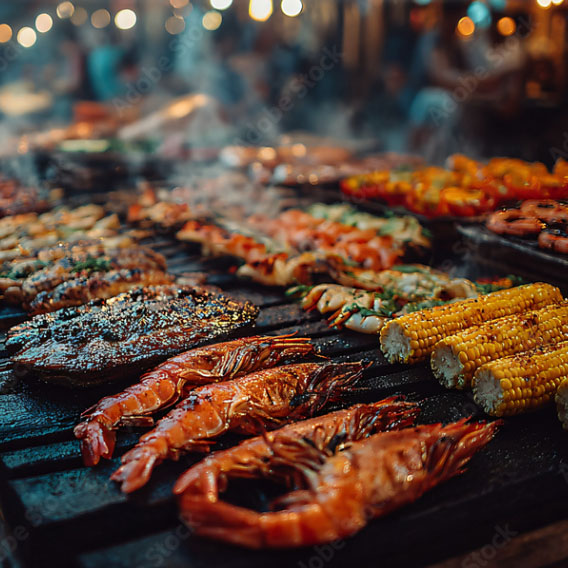

A Tropical Masterpiece Waiting for You
Experience the Islands of Choice
A constellation of emerald islands set in sapphire waters, where every shore tells a story of heritage, healing, and harmony.
The Heart of the Archipelago
Luzon
From the mist-shrouded emerald peaks of the Cordilleras to the vibrant pulses of its metropolitan hubs, Luzon offers a journey through history, nature, and flavor.

Mayon Volcano
The Perfect Cone of LuzonThe "World's Most Perfect Cone," rising majestically from the plains of Albay with a symmetry that defies nature.

Calle Crisologo
Echoes of Spanish Colonial StreetsA cobblestoned step back into the Spanish colonial era.

Intramuros
The Walled Heart of Old ManilaThe historic Walled City at the core of the capital.
Intramuros
The historic Walled City at the core of the capital.
Urban Centers
From the neon skyline of the metropolis to the pine-scented breezes of the mountain capital.

Metro Manila
A sprawling megacity where global business meets local tradition. Explore world-class malls in Makati, the street art of BGC, and the legendary sunset over Manila Bay.

Baguio City
Perched high in the mountains, Baguio is a pine-scented escape from the tropical heat. Famous for its strawberry farms, creative spirit, and the bustling Session Road.
The Heart of the Isles
Visayas
A constellation of emerald islands set in sapphire waters, where every shore tells a story of heritage, healing, and harmony.

Magellan's Cross
Historical LandmarkA symbol of the Philippines' Christianization, this 16th-century relic stands as a testament to the archipelago's deep colonial

Boracay White Beach
Premier DestinationWorld-renowned for its four-kilometer stretch of powdery white sand and crystal-clear turquoise waters, Boracay remains the crown jewel of Philippine tourism.

Fort San Pedro
Cebu’s Oldest Spanish FortressBuilt during the Spanish colonial era, Fort San Pedro stands as a compact stone fortress guarding the historic harbor of Cebu and the early roots of Christianity in the Philippines.
Metropolitan Charm
Discover cities that balance rapid modernization with old-world gentility and warmth.

Cebu City
A vibrant coastal city where Spanish colonial heritage, bustling trade routes, and island culture continue to shape the heart of the central Philippines.

Iloilo City
A graceful riverside city shaped by Spanish colonial heritage, historic mansions, and a long tradition of trade and culture in the central Philippines.
Majestic Mindanao
Mindanao
Discover the home of the majestic Mount Apo, vibrant ethnic tapestries, and pristine natural wonders. A journey into the heart of the Philippines' southern frontier.

Maria Cristina Falls
Iligan CityThe "Twin Falls" of Iligan, a stunning landmark that powers the region. Its raw hydroelectric might is matched only by its breathtaking natural beauty.

Hinatuan Enchanted River
Surigao del SurA crystal-clear deep blue spring river that seemingly appears out of nowhere. Local legends speak of spirits protecting its mysterious, bottomless depths.

Lake Sebu
The Cultural Highlands of MindanaoSurrounded by mountains and tranquil lakes, Lake Sebu is known for its indigenous T'boli culture, lush scenery, and peaceful highland atmosphere.
Vibrant Urban Hubs
Discover cities where tropical landscapes, indigenous heritage, vibrant markets, and modern urban energy come together across the diverse heart of southern Philippines.

Davao City
Home to the Philippine Eagle and the fragrant Durian, Davao offers a sophisticated mix of urban progress and wildlife conservation.

Zamboanga
Experience the rhythm of Chavacano and the iconic Vinta boats on the historic shores of Zamboanga.
Island Flavors & Fiesta Traditions
From savory Adobo and roasted Lechon to sweet Halo-Halo and bustling street food, the Philippines’s cuisine is a vibrant fusion of indigenous roots, Spanish heritage, Chinese influences, and tropical island flavors shaped by centuries of trade and cultural exchange.
A Taste of Luzon
Luzon's culinary map is as diverse as its landscape. From savory stews to sizzling appetizers, every dish tells a story of trade, tradition, and ingenuity.

Adobo
The unofficial national dish—meat marinated in vinegar, soy sauce, and garlic. Every family has their secret recipe.

Sisig
Pampanga's culinary gift to the world—a sizzling melody of savory, spicy, and sour flavors served on a hot plate.

A Taste of Visayas
Visayas’s cuisine is a vibrant blend of fresh seafood, smoky grilled specialties, tropical sweetness, and island traditions shaped by centuries of maritime trade and coastal living.

Cebu Lechon
Famed globally for its crispy skin and incredibly flavorful meat infused with local herbs like lemongrass and scallions.

La Paz Batchoy
A soul-warming noodle soup from Iloilo City, made with pork offal, crushed pork cracklings, and a rich, savory ginger-infused broth.

A Taste of Mindanao
Mindanao’s culinary landscape is as bold and diverse as its mountains and coastlines. From grilled seafood to rich coconut-based dishes and vibrant market flavors, every meal reflects a blend of indigenous traditions, Islamic heritage, and island ingenuity.

Durian
The "King of Fruits." While known for its strong aroma, the creamy, custard-like flesh is a delicacy cherished by locals and brave travelers alike.
Satti
A Zamboangueño breakfast staple. Grilled skewers served with rice cakes in a thick, sweet, and spicy red soup that jumpstarts the senses.

フィリピン共和国の歴史
Republic of the Philippines
From early maritime trade networks and Islamic sultanates to centuries of Spanish rule, American influence, and the struggle for independence, the history of the Philippines is a story of resilience, cultural fusion, and enduring national identity across thousands of islands.
古代
トンド王国 （900年頃～16世紀）
ルソン島に存在した海洋交易国家で、中国や東南アジア諸国との貿易が盛んでした。 ラグナ銅版碑文（900年）にその存在が記録されています。
ナマヤン王国 （12世紀～16世紀）
現在のマニラ周辺に存在し、トンド王国と並ぶ重要な勢力でした。
マギンダナオ王国 （13世紀～16世紀）
ミンダナオ島に存在し、イスラム教を受け入れた初期の王国の一つ。
スールー王国 （14世紀～19世紀）
スールー諸島を拠点とし、イスラム教国家として繁栄しました。
中世
スペイン到来以前のバランガイ社会 （16世紀以前）
フィリピン諸島は統一国家ではなく、バランガイと呼ばれる小規模な共同体が存在していました。
スペインの到来と植民地化 （1521年～1565年）
マゼランが1521年に到達し、スペインの影響が始まりました。
近世
スペイン領東インド （1565年～1898年）
フィリピンはスペインの植民地となり、キリスト教が広まりました。 マニラはアジアとヨーロッパを結ぶ貿易拠点として発展しました。
フィリピン独立革命 （1896年～1898年）
スペイン支配に対する独立運動が活発化し、革命が起こりました。
近現代・現代
アメリカ統治時代 （1898年～1946年）
米西戦争後、フィリピンはアメリカの支配下に入りました。 英語教育や近代化が進められました。
日本占領期 （1942年～1945年）
第二次世界大戦中、日本がフィリピンを占領しました。
フィリピン独立 （1946年）
アメリカから独立し、フィリピン共和国が成立しました。
フィリピン共和国 （1946年～現在）
独立後、民主主義体制を採用し、経済発展を目指しています。
現在の国家体制: 大統領を国家元首兼行政府の長とする立憲共和制をとっており、三権分立を基本としています。
歴史的分類: 第一から第四までの共和国は、独立からマルコス政権崩壊までの激動の時代にあたります。
第一共和国（マロロス共和国）: 1899年〜1901年（アジア初の民主憲法を制定）
第二共和国: 1943年〜1945年（日本占領下の政権）
第三共和国: 1946年〜1972年（アメリカからの独立〜戒厳令布告前）
※第三共和国（〜1972年）と第四共和国（1981年〜）の間の9年間は、「戒厳令（かいげんれい）体制」と呼ばれる暗黒の独裁期間だったため、共和国のカウントから外されています。
第四共和国: 1981年〜1986年（マルコス政権下の戒厳令解除から革命による崩壊まで）
第五共和国の成立: マルコス独裁政権が崩壊した後の1987年、新たに民主的な現行憲法（1987年憲法）が制定され、第五共和国へ移行しました。
バランガイ社会の特徴
「バランガイ社会」はフィリピンの歴史を語るうえで特有の概念ですが、あまり広く知られていないかもしれません。バランガイ（Barangay）は、スペイン植民地時代以前のフィリピンで存在していた小規模な共同体を指します。
バランガイ社会の特徴
規模:30～100世帯ほどの規模で構成され、川沿いや海岸沿いなど、自然環境に適した場所に形成されました。
リーダーシップ:ダトゥ（Datu）と呼ばれる首長が共同体を統治しました。ダトゥは通常、地元の有力者や軍事的リーダーが担いました。
経済活動:漁業、農業、交易などを中心とした自給自足的な経済が主流でした。他のバランガイや外国商人（特に中国や東南アジア地域）との交易も行われました。
社会構造: 階層的な社会構造が存在し、ダトゥの家族や貴族層、庶民、そして奴隷に分かれていました。
文化と宗教:精霊崇拝や祖先信仰が主流で、自然と密接に結びついた宗教的価値観が根付いていました。 スペイン植民地化以降、このバランガイという言葉は行政単位として再定義され、現在もフィリピンの地方自治体の最小単位として使われています。
「国」よりも「バランガイ（村）」への所属意識が強い
バランガイは、もともと「バランガイ船」という一隻の船に乗って移住してきた大家族（100世帯ほど）の集落が起源です。フィリピン人にとって、大枠の「フィリピン共和国」という国家への帰属意識よりも、「俺は〇〇バランガイの人間だ」という、血縁や地元の繋がり（コミュニティ）のほうが圧倒的に優先されます。
助け合いの精神「バヤニハン（Bayanihan）」
バランガイ社会を象徴するのが「バヤニハン」という相互扶助の精神です。誰かが困っていればバランガイ全体で助ける、この圧倒的な横の繋がりが、貧しくても自殺者が少なく、笑顔で生きていけるフィリピンの強さの源です。